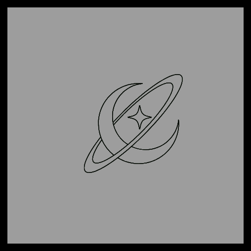

Somos la organización Sistema Solar. Una organización sin fines de lucro dedicada a la divulgación de información sobre el sistema solar. Nuestro objetivo es despertar el interés y la curiosidad por el espacio y fomentar el conocimiento sobre los diversos cuerpos celestes que conforman nuestro vecindario cósmico. Creemos que el conocimiento del universo no solo enriquece nuestra comprensión científica, sino que también inspira asombro y apreciación por la maravilla y la inmensidad del cosmos.